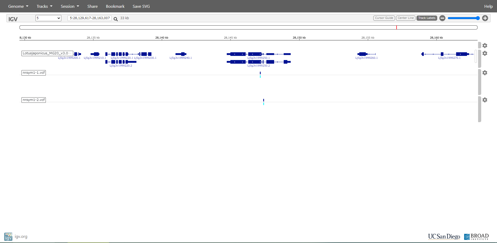
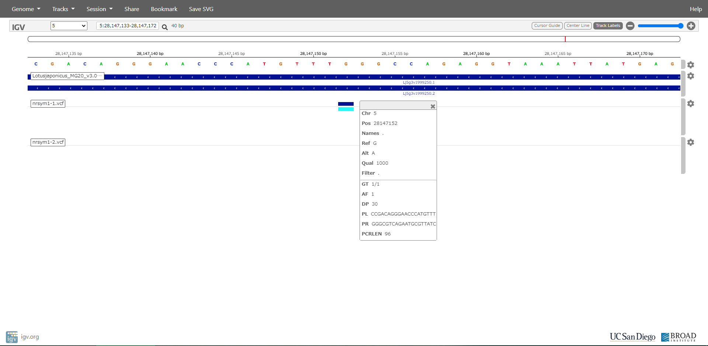
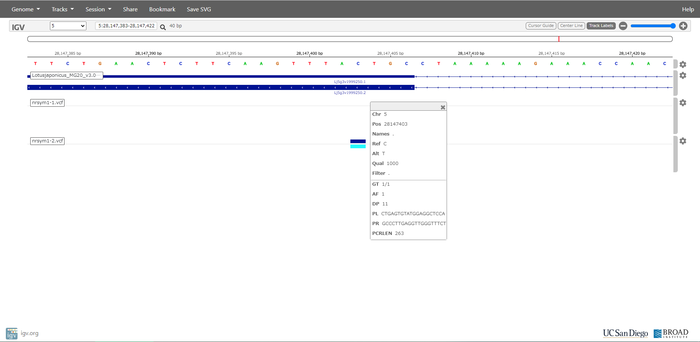

- A NIN-LIKE PROTEIN mediates nitrate-induced control of root nodule symbiosis in Lotus japonicus | Nature Communications
ミヤコグサは、マメ科の植物で、根粒菌の共生に関する遺伝子の解析が進められています。根粒菌との共生は土中の窒素源が多い場合は抑制されますが、窒素源の量に関わらず共生が行われる変異体から原因遺伝子を特定した論文です。
- Identification of the causative gene of Lotus japonicus nitrate unresponsive symbiosis 1 mutants
に、コントロールとして野生型のMG-20の配列と、変異体のnrsym1-1とnrsym1-2のNGS配列が公開されています。
- コントロールにMG-20が用いられているので、リファレンスゲノム配列には、GifuではなくMG-20(LJ3)を使用します。
https://lotus.au.dk/data/downloadより、Lotus japonicus MG20 v3.0 GenomeにあるLotusjaponicus_MG20_v3.0_genome.fa.gzをダウンロードします。
$ cd ped
$ mkdir LJ3
$ mv Lotusjaponicus_MG20_v3.0_genome.fa.gz LJ3
$ cd LJ3
$ gzip -d Lotusjaponicus_MG20_v3.0_genome.fa.gz
として、圧縮状態のgzファイルをfastaファイルに変換します。
また、同時にMG-20のgffファイル Lotusjaponicus_MG20_v3.0_annotations.gff3.gz もダウンロードしておきます。
- ショートリード配列をダウンロードします。DDBJのDRAに登録されているので、https://ddbj.nig.ac.jp/DRASearch/を開いて、
DRR097247 DRR0972478 DRR097249 DRR097250 DRR097251 DRR097252
を1つずつ順にAccessionにペーストしてSearchをクリックします。
検索結果のページの2行目のFASTQのリンクをクリックすると圧縮されたショートリード配列のペアがダウンロードできます。
$ mkdir MG-20
$ mkdir MG-20/read
$ mkdir nrsym1-1
$ mkdir nrsym1-1/read
$ mkdir nrsym1-2
$ mkdir nrsym1-2/read
として、それぞれコントロールとターゲットのディレクトリを作ります。
$ mv DRR097247_?.fastq.bz2 DRR097248_?.fastq.bz2 MG-20/read
$ mv DRR097249_?.fastq.bz2 DRR097250_?.fastq.bz2 nrsym1-1/read
$ mv DRR097251_?.fastq.bz2 DRR097252_?.fastq.bz2 nrsym1-2/read
として、ダウンロードしたファイルを、それぞれのディレクトリに移します。
- PEDでの多型検出は、
$ perl ped.pl target=nrsym1-1,control=MG-20,ref=LJ3
$ perl ped.pl target=nrsym1-2,control=MG-20,ref=LJ3
で、それぞれの多型が検出されます。
- LJ3.fasta
LJ3.fasta.fai
Lotusjaponicus_MG20_v3.0_annotations.gff3.gz
を、それぞれダウンロードします。
- 解析済みvcfファイルは、
nrsym1-1.vcf
nrsym1-2.vcf
からダウンロードできます。
- https://igv.org/app/をクリックして、WebのIGVを開きます。
Genomeのプルダウンメニューより、'Local File ...'を選んでダウンロードした、LJ3.fastaとLJ3.fasta.faiを両方一緒に選択してSubmitボタンをクリックします。
Tracksのプルダウンメニューより、'Local File ...'を選んで、Lotusjaponicus_MG20_v3.0_annotations.gff3.gz、nrsym1-1.vcf、nrsym1-2.vcfを順にアップロードします。
第5染色体を選んで、28.1MBのあたりを拡大します。
Lj5g3v1999250.2の遺伝子の中にあるSNPが目的の変異です。
同一遺伝子のコード領域の少しずれた位置に、2つ系統でそれぞれホモ型変異が入っているので、この遺伝子が原因遺伝だろうと見当がつきます。



図をクリックすると大きくなります。
論文に掲載されている変異は、nrsym1-2遺伝子の場合で、第5染色体の28,147,403の位置のCからTへの置換変異で、283番目のバリンがイソロイシンに変わっています。
この変異が原因で、窒素源の多少による根粒数の増減の調節ができなくなっていると考えられるので、この遺伝子が窒素源の量による根粒数のコントロールに関与していることが推察されます。
- 注意点 IVGでは長い欠失や転座の情報をうまく表示できない場合があるので、転座と80塩基以上の欠失に関しては、vcfファイルに出力しないように設定しています。
大きな構造変異を調べたい場合は、targetのディレクトリの中に出力された、svの拡張子のついたファイルを直接ご参照ください。